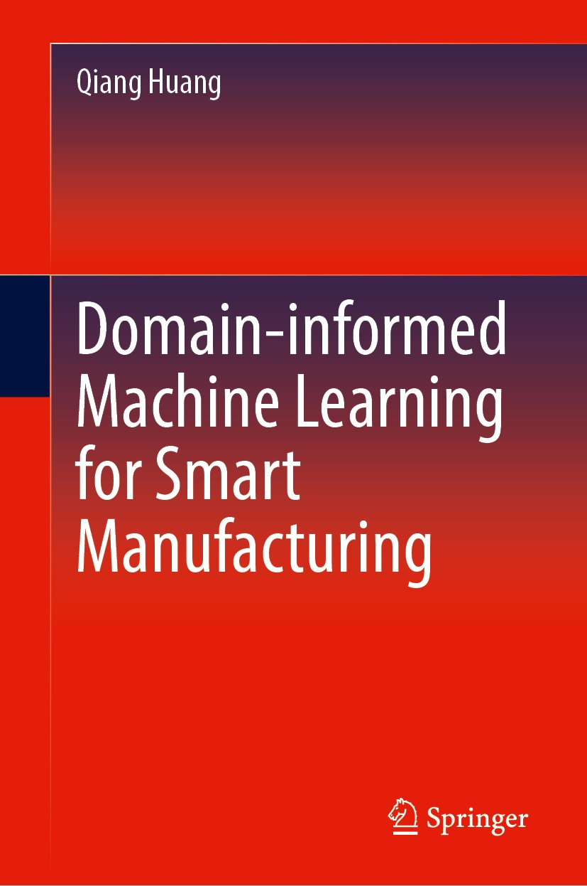

Prof. Qiang Sean Huang
Professor · Daniel J. Epstein Department of Industrial and Systems Engineering &
Mork Family Department of Chemical Engineering & Materials Science · USC
My research focuses on domain-informed machine learning for smart manufacturing and industrial AI. I direct the Huang Lab at USC.
Research Interests
- Agentic AI for Production Quality Control
- Domain-informed Machine Learning —
- Causal Machine Learning for Engineering Systems
Agentic AI & 3D Printing Quality
Model pre-training and fine-tuning for agentic 3D printing with prescriptive correction.
3D Freeform Shape Deviation Learning
Small-sample learning and prediction for geometric accuracy of 3D-printed products.
Causal & Transfer Learning
Cross-process model transfer and causal inference for robust quality control.
News
- [Nov. 2025] Graduation Chris Henson successfully defended his dissertation "Smart Cyber-Physical 3D Printing System for Real-Time Quality Analysis and Defect Detection." Dr. Henson is now at Nvidia. Congratulations!
- [Nov. 2025] Editorial Dr. Huang joins the Senior Editorial Board of IEEE Transactions on Automation Science and Engineering.
- [Oct. 2025] New Preprint Peng Wang & Minghao Gu: "Feature Space Adaptation for Robust Model Fine-tuning," arXiv 2510.19155.
- [Aug. 2025] Conference 2025 IEEE CASE held in Downtown Los Angeles, Aug. 17–21. Dr. Huang served as General Chair.
- [Jun. 2025] Book Domain-informed Machine Learning for Smart Manufacturing, Springer. Order at Amazon.
- [2025] Faculty Hire Weizhi Lin joins San José State University as a Tenure-track Assistant Professor. Congratulations!
- [Jan. 2025] New Paper Weizhi Lin & Huang: "Automated Surface Patch Extraction for 3D Printing Qualification," IEEE TASE. [DOI]
- [Oct. 2024] Award Weizhi Lin wins the INFORMS QSR Best Poster (26 participants, 18 universities) for "Automated Surface Patch Extraction for 3D Printing Qualification."
- [Mar. 2024] New Paper Weizhi Lin et al.: "Finite manufacturing primitives: a representation scheme for additive manufacturing quality assurance," CIRP Annals.
- [Feb. 2024] Honor Elected Senior Member of the National Academy of Inventors (NAI).
- [Jun. 2024] Grant Former group member Prof. Cesar Ruiz (U. of Oklahoma) leads $55K NSF CMMI grant (2328454/2328455); Prof. Huang is collaborative PI.
Selected Publications
* denotes student/post-doc co-author. Full list at huanglab.usc.edu.
- Minghao Gu, Cesar Ruiz, Qiang Huang, "Surface Quality Characterization, Learning and Prediction for 3D Printed Two-dimensional Free-form Products Through Dimensional Reduction," IEEE Transactions on Automation Science and Engineering, Vol. 23, pp. 4142–4153. 2026
- Weizhi Lin*, Qiang Huang, "AINR: Automated Intrinsic Non-Rigid Registration for Accuracy Qualification of Complex Freeform Products in 3D Printing," IISE Transactions on Design and Manufacturing, Vol. 58(6), pp. 738–749. 2026
- Ruiz, Bhatt, Gupta, Huang, "Human-Process-Inspired Automated Layer Segmentation for Quality Assessment in Wire-Arc Additive Manufacturing," IEEE TASE, Vol. 23, pp. 2256–2267. [DOI] 2026
- Weizhi Lin*, Qiang Huang, "Automated Surface Patch Extraction for 3D Printing Qualification," IEEE TASE, Vol. 22, pp. 11419–11430. [DOI] 2025
- Weizhi Lin*, Yuanxiang Wang*, Stephen Lu, Qiang Huang, "Finite manufacturing primitives: a representation scheme for additive manufacturing quality assurance," CIRP Annals – Manufacturing Technology. [Link] 2024
- Weizhi Lin*, Qiang Huang, "Automated Deviation-Aware Landmark Selection for Freeform Product Accuracy Qualification in 3D Printing," IISE Transactions, Data Science, Quality and Reliability. [DOI] 2024
- Huang, Q., "An Impulse Response Formulation for Small-Sample Learning and Control of Additive Manufacturing Quality," IISE Transactions on Design and Manufacturing, Vol. 55(9), pp. 926–939. [DOI] 2023
- Yuanxiang Wang*, Cesar Ruiz*, Q. Huang, "Learning and Predicting Shape Deviations of Smooth and Non-Smooth 3D Geometries through Mathematical Decomposition of Additive Manufacturing," IEEE TASE, Vol. 20(3), pp. 1527–1538. [DOI] 2022
- Cesar Ruiz*, Davoud Jafari, et al., Qiang Huang, "Prediction and Control of Product Shape Quality in Wire and Arc Additive Manufacturing Using Generalized Additive Models," ASME J. Manufacturing Science and Engineering, Vol. 144, 111005. [DOI] 2022
- Huang, Wang, Lyu, Lin, "Shape Deviation Generator (SDG) — A Convolution Framework for Learning and Predicting 3D Printing Shape Accuracy," IEEE TASE. [DOI] 2019
Book

Domain-informed Machine Learning for Smart Manufacturing
Qiang Huang · Springer, June 2025 · ISBN 978-3-031-91630-4
This book introduces how complicated engineering phenomena and mechanisms are integrated into machine learning problem formulation and methodology development for smart manufacturing. The topics include domain-informed feature representation, dimension reduction for personalized manufacturing, fabrication-aware modeling of additive manufacturing processes, small-sample machine learning for 3D printing quality, optimal compensation of 3D shape deviation in 3D printing, engineering-informed transfer learning for smart manufacturing, and domain-informed predictive modeling for nanomanufacturing quality.
Education
- Ph.D., Industrial and Operations Engineering University of Michigan, Ann Arbor
- M.A., Statistics University of Michigan, Ann Arbor
- Ph.D., Mechanical Engineering Shanghai Jiao Tong University
- B.S., Mechanical Engineering Shanghai Jiao Tong University
Selected Honors & Awards
- Fellow, Institute of Industrial and Systems Engineers (FIISE)
- Fellow, American Society of Mechanical Engineers (FASME)
- Senior Member, National Academy of Inventors (SMNAI) · 2024
- Senior Editorial Board, IEEE Transactions on Automation Science and Engineering · Starting 2025
- General Chair, 2025 IEEE International Conference on Automation Science and Engineering (CASE), Los Angeles
- IEEE CASE 2021 Best Conference Paper Award · Wang, Ruiz & Huang · Lyon, France
- 2022 IISE/QCRE Track Best Paper Award (with Weizhi Lin, Cesar Ruiz) · IISE Annual Conference
- Plenary Speaker, 2022 IEEE CCE Conference · Mexico City